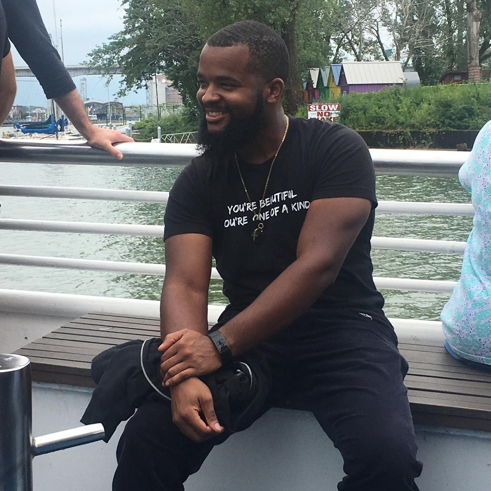
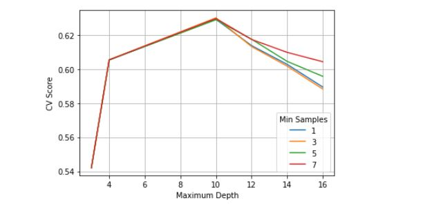

About

Recent graduate with a BS in Computer Science, concentrating in Data Science and Artificial Intelligence. Currently pursuing MS in Artificial Intelligence. Using skills such as Python, R, SQL, and Machine learning to solve business problems.
I am passionate about AI and using it to assist in solving complicated problems. Check out my Resume.
Contact
You can email me or contact me on my socials below.
FER Project

Facial Expression Recognition Group Capstone
Highlights
- Worked in a group capstone project using kaggle competition
- Built multiple ML models, giving options to performance
- Built an ensemble of the best performing models created data from the predictions loaded into CSV files
- Used predictions to create a meta model selecting the best performing models
- Built Decision tree classifier, Random forest, light GBM and used optuna for tuning the models
Skills

Python libraries used are Numpy, Scipy, Pandas, Matplotlib, Seaborn, Sklearn, Tensorflow, Spacy, and PyTorch. Understanding data acquisition, classification, regression, supervised and unsupervised learning, reinforcement learning,
normalization, distance metrics, k-means clustering, decision trees, random forest and more.